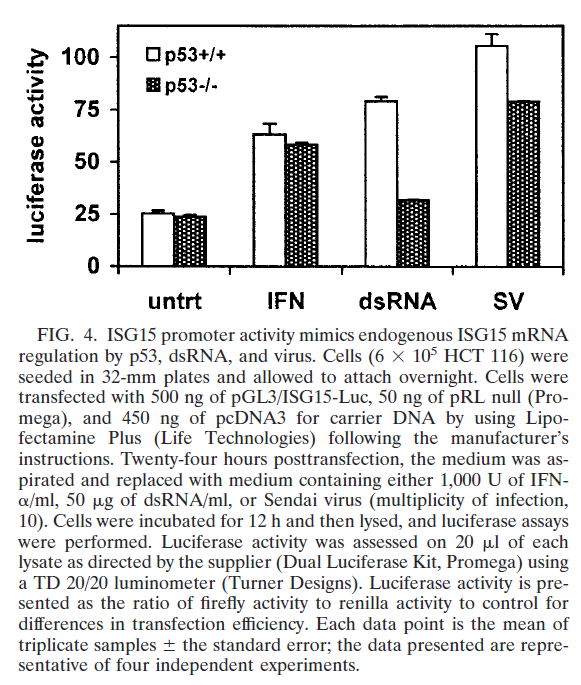

Mykland et al. (1995) Regeneration in Markov chain samplers. Journal of the American Statistical Association 90:233-241, Figure 1
No labels or ticks for x and y-axis;
Hummer et al. (2001) Role for p53 in gene induction by double-stranded RNA. J Virol 75:7774-7777, Figure 4

No minus error bar;
y axis should have % sign;
Cawley et al. (2004) Unbiased mapping of transcription factor binding sites along human chromosomes 21 and 22 points to widespread regulation of noncoding RNAs. Cell 116:499-509, Figure 1
No 3D pie chart;
Jorgenson et al. (2005) Ethnicity and human genetic linkage maps. American Journal of Human Genetics 76:276-290, Figure 2
Background color is not suitable;
Axis ticks font size is too small
In an aerosol particle size distribution figure, the x-axis label is \(D_p(\mu m)\), and the y-axis label is \(\frac{\mathrm{d}N}{\mathrm{d}\log D_p}(\mathrm{cm}^{-3})\):
Write the R code for inserting the axis labels into a graph.